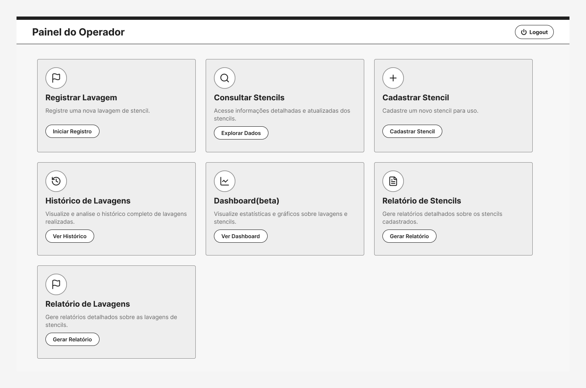

Etapa 1 de 2 · Entender a operação
Transformei um processo industrial não documentado em fluxos, regras e requisitos para um novo sistema
Três semanas acompanhando a lavagem de stencils na fábrica para entender como o processo funcionava de verdade e transformar isso em requisitos para um sistema novo.
Manufatura eletrônica · Projeto sob NDA: dados e telas anonimizados.
Em resumo
Problema
O processo funcionava, mas quase nada estava escrito. As regras ficavam na cabeça dos operadores e do coordenador.
Meu papel
Planejei e conduzi o Discovery: acompanhei a rotina, entrevistei e documentei.
Abordagem
Shadowing, entrevistas, fluxo AS-IS e síntese das dores.
Resultado
Regras de negócio documentadas e os requisitos usados nas sprints seguintes.
Contexto
O cliente ia ganhar um sistema novo para gerenciar stencils. Antes de desenhar qualquer tela, a gente precisava entender como a lavagem funcionava na prática. Ela dependia de sistemas legados, de registros espalhados e do que cada operador sabia.
Problema
A maior parte das regras de negócio só existia na cabeça dos operadores e do coordenador da área.
Consultar o histórico de um stencil exigia passar por mais de um sistema legado, e analisar os dados exigia exportar planilhas. Sem entender esse processo, qualquer tela que a gente desenhasse seria um chute.

Fig. 02 — Wireframe de baixa fidelidade
Objetivos
Entender o fluxo completo e quem participa de cada etapa
Mapear as regras de negócio e como os sistemas legados eram usados
Registrar o processo como ele é hoje (AS-IS), com gargalos e oportunidades
Chegar ao desenvolvimento com requisitos, e não com suposições
Processo
Kickoff
Objetivo do Discovery, áreas envolvidas e quem validaria o quê.
Shadowing
Acompanhei a rotina dos operadores do começo ao fim do processo.
Entrevistas
Operadores, coordenador de engenharia SMT e Product Owner.
Fluxo AS-IS
Atividades, sistemas, decisões, regras e responsáveis.
Síntese
Padrões, problemas recorrentes, oportunidades e riscos.
Requisitos
Base para as primeiras histórias de usuário.
Observação em campo
Acompanhei a rotina dos operadores na produção. Foi ali que apareceu a diferença entre o processo documentado e o que realmente acontecia, incluindo regras que ninguém tinha escrito.
Fluxos AS-IS
A principal entrega do Discovery: o fluxo do processo atual, do uso do stencil na linha até o descarte, com cada interação entre operadores, sistemas e ativos. Mapeei tudo no FigJam.
Descobertas
Principais dores
Informação espalhada em sistemas legados, pouca rastreabilidade, dependência de exportar CSV para analisar no Power BI, conhecimento concentrado nos operadores e nenhuma forma fácil de perceber anomalias, como lavagens repetidas ou fora do horário.
Principais insights
Juntar os dados em um lugar só reduziria o tempo de consulta. Indicadores visuais poderiam substituir parte das análises em planilha. E um histórico organizado permitiria acompanhar o desgaste de cada stencil. Nesse momento, eram hipóteses, não conclusões.
Oportunidades
Dashboard, histórico de lavagens, consulta detalhada, exportação de relatórios, gráficos de anomalias, gestão de cadastros e rastreabilidade. Parte disso virou funcionalidade no case seguinte.
Resultados
Não medimos impacto nesta etapa. O que ficou foi o processo documentado, as regras de negócio escritas e os requisitos que o time usou para começar o sistema.
Principais entregas
Discovery planejado e conduzido em ambiente fabril
Shadowing e entrevistas com operadores, coordenador e P.O.
Fluxo AS-IS completo
Regras de negócio levantadas e documentadas
Dores e oportunidades mapeadas
Requisitos para as sprints seguintes
Aprendizados
Foi meu primeiro Discovery dentro de uma fábrica. Aprendi a observar antes de perguntar e a documentar um processo cheio de exceções.
Também aprendi que, nesse tipo de ambiente, muita regra não está escrita em lugar nenhum. O jeito é validar cada informação com mais de uma pessoa antes de tratá-la como certa.
Métodos: shadowing, entrevistas, affinity mapping · Ferramentas: FigJam, Figma, Miro, Notion